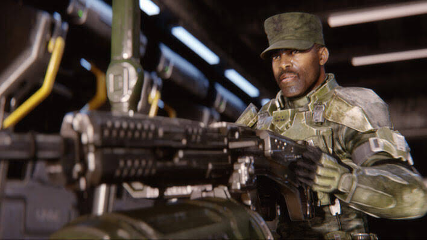
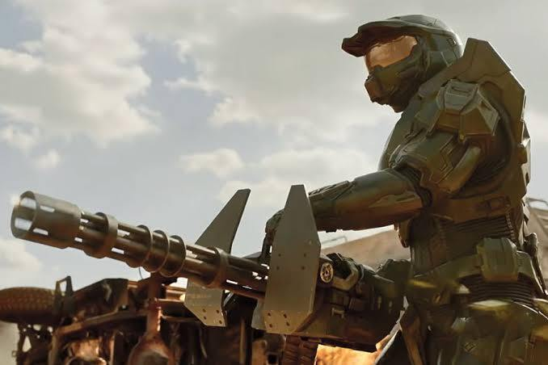
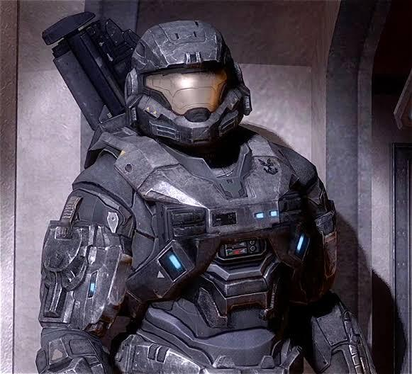
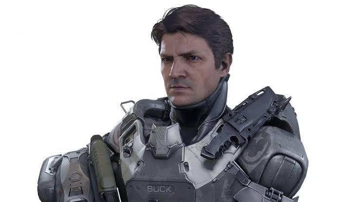

Spartan es un término del Universo de Halo que se refiere a soldados provenientes de un proyecto de varios años de desarrollo en el que se trataba de crear soldados mucho más adaptados y resistente que cualquier marine de la UNSC
SPARTANS-I:El programa SPARTAN comenzó en serio con el Proyecto ORION, una medida tomada por el UNSC y la ONI para crear una nueva forma de súper soldado no tradicional. El objetivo era frustrar la disidencia en las Colonias Exteriores, que, si no se controlaban, habrían catapultado a la humanidad a una guerra de décadas contra sí misma con millones de bajas. Sin embargo, el Proyecto ORION finalmente fracasó, ya que los candidatos que participaron en el proyecto, generalmente fuerzas especiales del UNSC, eran demasiado mayores y las medidas de detección de su ADN eran inadecuadas.
SPARTANS-II:La historia de fondo de los SPARTAN-II es sorprendentemente oscura. Los niños pequeños, cada uno determinado por tener un conjunto específico de rasgos deseables para los súper soldados, fueron secuestrados de sus familias y reemplazados por clones que murieron poco después.Juntos, los candidatos pasaron por años de riguroso entrenamiento y adoctrinamiento, incluidos los aumentos genéticos que mataron o paralizaron a muchos de los niños. Al igual que el Proyecto ORION, los SPARTAN-II estaban destinados a poner fin a las rebeliones en las Colonias Exteriores. Sin embargo, esos planes cambiaron cuando comenzó la guerra Humano-Covenant en 2525.
SPARTANS-III:Los SPARTAN-III fueron una alternativa producida en masa a sus precursores. Esta vez, sin embargo, la ONI y el UNSC utilizaron niños huérfanos alimentados por la venganza de las colonias destruidas por The Covenant para crear super-soldados. Los SPARTAN-III tenían un entrenamiento más intenso que los Spartans anteriores, pero fueron enviados a misiones que eran más peligrosas y murieron con mayor frecuencia como resultado.El programa SPARTAN-III fue dirigido principalmente por el coronel James Ackerson, aunque también recibió el apoyo de Kurt-051, un SPARTAN-II que ayudó a entrenar a la nueva generación de Spartans. Muchos en el programa SPARTAN-III fueron entrenados en el planeta Onyx, que era una instalación Forerunner masiva. Eventualmente, sin embargo, Onyx fue el sitio de un conflicto entre el UNSC, Covenant y los Guardianes del planeta, que terminó en su desintegración.
SPARTANS-IV:En lugar de convertir a los niños con el cerebro lavado en máquinas de matar alienígenas, el programa SPARTAN-IV optó por utilizar adultos que consintieran. Con la ayuda de Jun, el programa convirtió a soldados prometedores en espartans, aunque los aumentos genéticos no son tan extremos como los de generaciones anteriores. Sin embargo, su armadura es más avanzada, equilibrando un poco las cosas. Si bien las generaciones anteriores de Spartans se mantuvieron en secreto para el público hasta bien entrada la Guerra Human-Covenant, para cuando se lanzó el programa SPARTAN-IV, los programas se habían hecho públicos como una forma de levantar la moral entre las fuerzas del UNSC.
> 